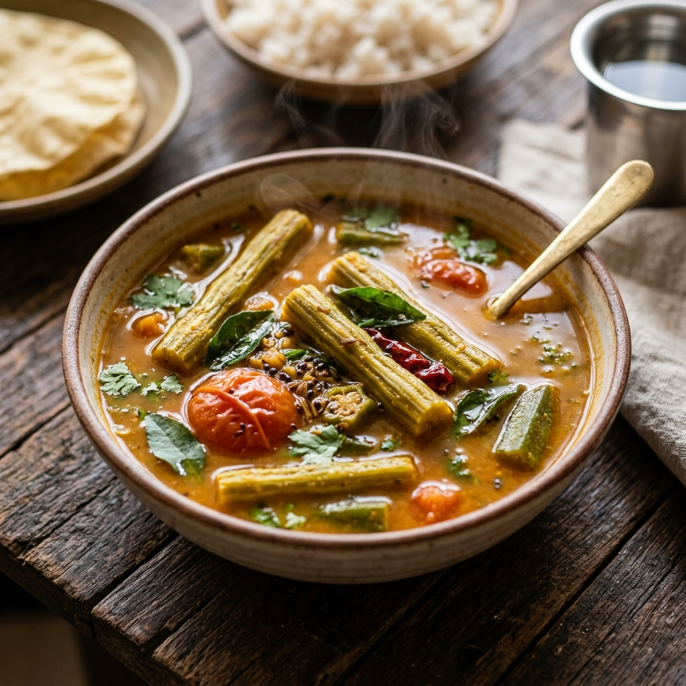

South Indian
South Indian Sambar
A classic, aromatic, and flavorful South Indian lentil vegetable stew made with fresh vegetables, spices, and tamarind. Perfect with rice, idlis, and dosas!
Prep Time
15 mins
Cook Time
30 mins
Total Time
45 mins
Servings
4
Instructions
- Cook the dal: Pressure cook toor dal with 3 cups water, ¼ tsp turmeric, 1 tsp oil, and salt for 3 whistles. Let the pressure release naturally, then mash the cooked dal until smooth. Set aside.
- Temper: Heat 2 tbsp oil in a large pot. Add mustard seeds and cumin seeds, letting them splutter. Add the garlic cloves, curry leaves, dry red chillies, and hing. Sauté for a few seconds until highly aromatic.
- Cook vegetables: Add the chopped vegetables (drumstick, onion, tomato, green chillies, brinjal, okra, bottle gourd) along with salt, ¼ tsp turmeric, and red chilli powder. Mix well, cover, and cook on medium heat until the vegetables are about 90% tender.
- Add tamarind: Pour in the extracted tamarind juice and let it simmer for about 5 minutes to cook off the raw tamarind smell.
- Combine: Add the mashed dal and 2 glasses (about 400 ml) of water. Mix everything thoroughly and adjust salt if needed.
- Finish: Bring the sambar to a boil, then stir in 1 tbsp of sambar powder. Simmer on low heat for 5 minutes allowing the flavors to meld together.
- Serve: Turn off the heat, garnish with freshly chopped coriander leaves, and serve hot!